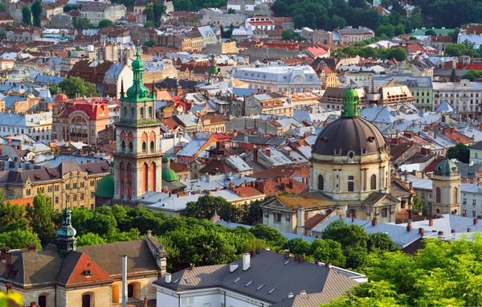
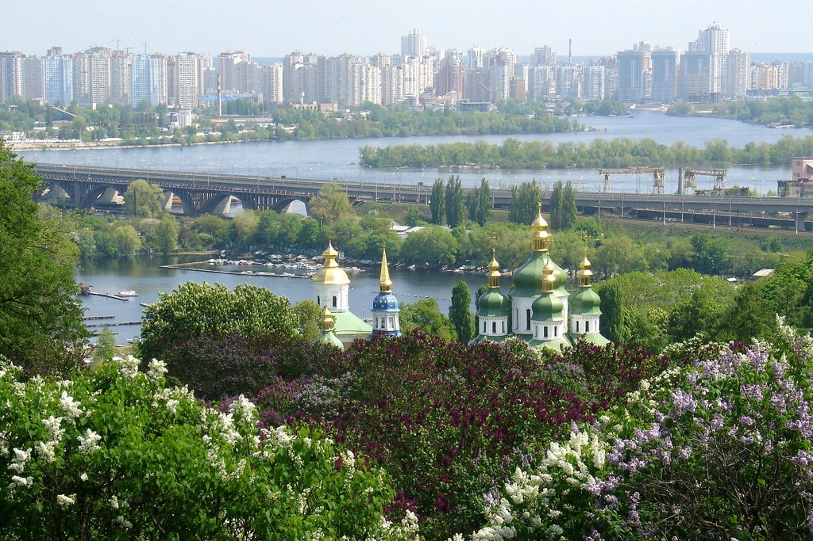
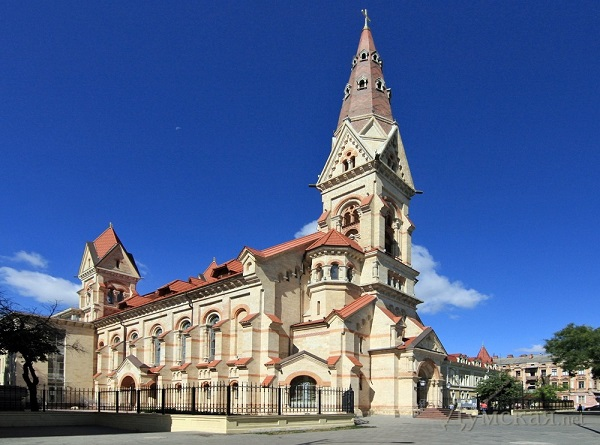

Наші найкращі кадри
-

Львів: затишний вечір після довгої прогулянки старовинними бруківками. -

Київ: величні золоті купола соборів на тлі вечірнього дніпровського небосхилу. -

Одеса: сонячні промені у знаменитих пасажах та неповторна морська атмосфера.